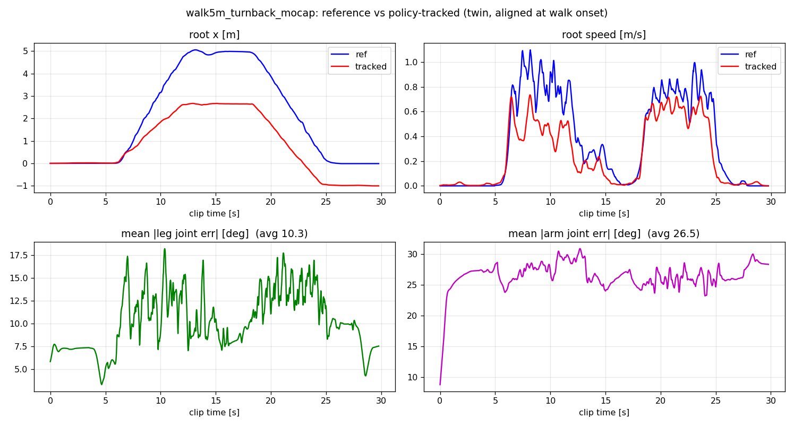
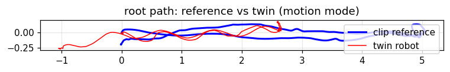

s3_deploy.py file, byte-identical, runs both the MuJoCo twin and the real robot.None of the 2,497 clips in x2_native_v3 walks out and back (mocap-room limits; the "180" in LAFAN-style names is a capture direction, not a turn). The clip was therefore stitched from five natural segments — natural start → natural decelerating stop → a real human turning in place (178°) → natural start → natural stop — cut at gait-phase-matched frames, blended over 0.4 s seams, with per-segment heading drift (10–17°) corrected by aiming each seam at the corridor heading. 29.8 s, 5.05 m out, returns to origin ±0.2 m. A planner-generated alternative was rejected by eyeball review as "unnatural."
| Metric | Value | Reading |
|---|---|---|
| Mean leg-joint tracking error | 10.3° (p95 15.6°) | usable locomotion tracking, not tight |
| Mean arm-joint tracking error | 26.5° (p95 29.5°) | arms barely track the reference (wrist actions rail at the ±20 clip) |
| Distance ratio (realized / reference) | 0.68 path · 0.53 x-displacement | systematic stride shrink on large natural strides |
| Lateral corridor | ±0.25 m | heading tracks straight; only distance is discounted |


| Session | What happened |
|---|---|
| 1 | Engaged 0.8 s, operator test-stop — first brake check. |
| 2 | 25° tilt gate's first field trip: hanging pose was 37° pitched; the bridge refused engage and damped. Zero motion, zero incident — exactly as designed. |
| 3 | Full run, 23.4 s: out → 180° turn → return; operator ended it near the end of the return leg. |
| 4 | Engaged 1.7 s, second test-stop. |
| 5 | Full run, 24.7 s — the "real ≈ sim" run. Loop latency p50 0.4 ms / p99 0.9 ms over 9,039 ticks. |
Field notes: at ready pose the gantry rope held the robot at a genuine 8–14° forward lean (leg-kinematics and IMU gravity agree within 2°, so it is real lean, not sensor bias — the TILTKIN split correctly preserved it). The policy engaged from a 12° lean and still walked; next time the rope gets adjusted to <5° anyway. The 23 s of stable walking also implicitly validates the real IMU's angular-velocity frame — a twin-style 94° frame bug would not survive gait.
Before the robot, the same clip ran through the calibrated MuJoCo twin (isolated DDS domain) using the exact files the robot would run: clip gate passed (ready pose = clip frame 0, 0.000 rad from the trained stand), full 29.8 s playback, no e-stop, root height never below 0.608 m.
| Gate | Status |
|---|---|
| md5 identity — file the robot runs = file the twin validated | PASS (s3_deploy.py 3bd213be… · x2_sim_twin.py 10f6c333…) |
| Twin all-green (stand + walk + motion) | PASS — zero falls, full clip playback |
| No private twin-physics edits | PASS — shipped twin, calibrated actuator friction only |
| Deploy-only logic = 0 | PASS — all six v5 fixes default-on, no env forks in the launch script |